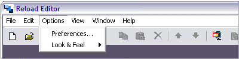
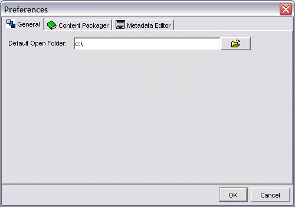
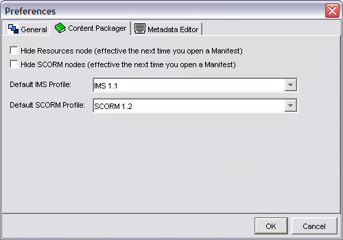
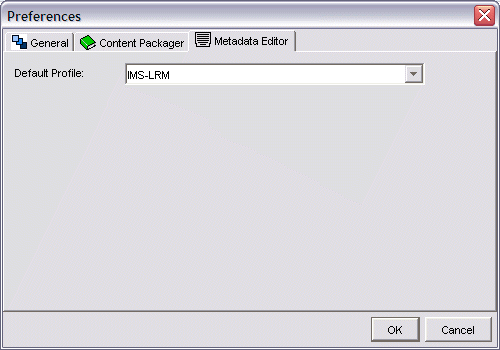

Options Menu
The Options Menu has only two elements at present:

Preferences
The preferences pane consists of 3 tabbed windows.
General
On this tab you can specify a default 'Open' directory for the RELOAD Editor.

Content Packager
On this tab you can choose whether to show or hide SCORM and Resources nodes. You can also choose a default IMS CP Profile and default SCORM profile.

Metadata Editor
On this tab you can specify a default IMS Metadata profile.

Look and Feel >
The Look and Feel Menu Item (View, Look and Feel) allows the user to choose the overall look of the RELOAD Editor software. The User can choose between three 'look and feel' options as follows: